Investigations Lab
How to use the atlas
This guide follows one case from the first search to a Word file of evidence. The client is made up. The reports are real. Every picture is the atlas as it looked on 18 November 2026.
Her name is R. She is from Nigeria. She loves a woman. The government plans to send her to the Central African Republic in October 2026, under an agreement with that country. From there she could be sent back to Nigeria. An immigration court in the United States will decide.
I am her lawyer. I want to show that the transfer would put her rights in danger. So I need to know three things. How does the Central African Republic treat women who love women, then and now? What else waits there for a woman alone? And what happens to her if she is sent on to Nigeria?
The atlas will help me find the reports and quote them. It will not tell me who is right. When two reports disagree, it shows me both. The weighing is mine.
Look at every country at once
Before I open one country, I look at all of them. I want to know where my client's story has been written about before, and how often.
1Start on the first page
The first page has one search box. It reaches about 83,000 reports on 198 countries, written between 1986 and 2026. I can type words or choose a topic. Or I can click a country on the map.

2Search one word everywhere
Type lesbian and press Look.
The map darkens where more documents hold the word. The list below ranks the countries. A strip of bars shows the years the documents came out.
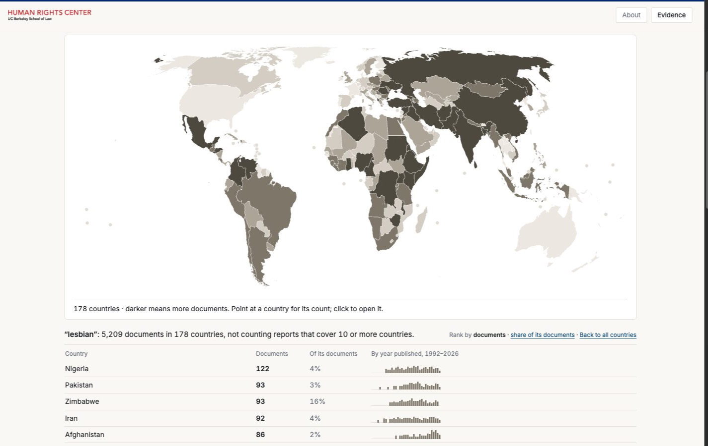

No country in the collection has more documents about lesbian women than Nigeria. If R. is sent back there, I will have plenty to read.
A document counts here if it holds the word anywhere. Put a phrase in quotes, like "blood feud", and a document counts only where the words stand side by side.
3Compare shares, not only counts
Click “share of its documents”.
Countries with many documents have more of everything. So I can rank them by the part of their own documents that holds the word. Countries with fewer than 50 documents go to the bottom. One document out of two is not a pattern.
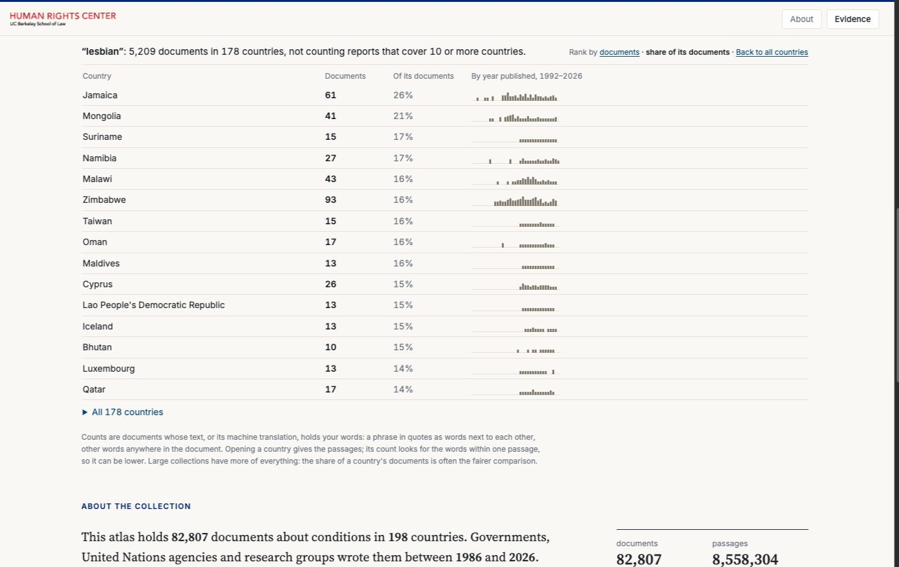
4Search a topic everywhere
Choose “Sexual orientation and gender identity” from the topics. Point at the Central African Republic.
A topic gathers passages that the reports themselves filed under a matching heading. It also gathers passages a model filed by their words. Reference lists and tables of contents stay out.
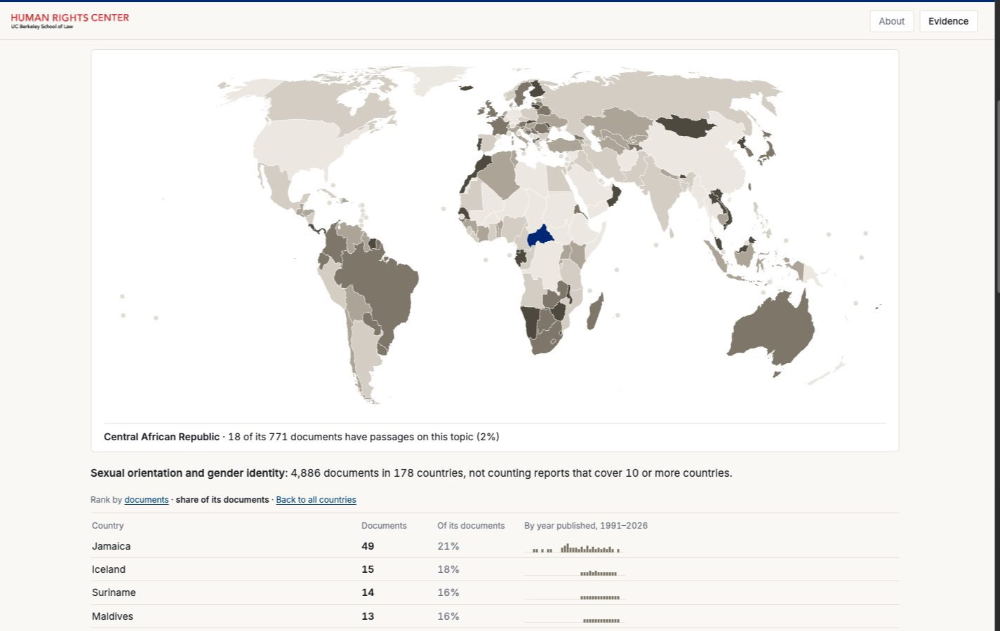
Very little has been written about gay and lesbian people in the Central African Republic. That silence is worth telling the court about. The reports that do exist say people there hide. I come back to this in step 12.
5Search by meaning everywhere
Change “Exact words” to “Similar wording” inside the search box. Type lesbian women are beaten by their relatives and the police do not protect them.
Now the atlas looks for passages that mean what my sentence means. They may use other words, or another language. The first time, my browser downloads a language model of about 135 MB. My sentence never leaves my computer.

A machine makes these matches. It can miss things and it can stray. Use it to find a pattern, then go and read.
Study the country she is sent to
Now I open the Central African Republic. I write down the facts of the case. Then I read what each source said, year by year, up to the newest report.
6Open the country
Click the Central African Republic on the map or in the list.
Each row is an institution that wrote about the country. Each mark is a year it published something. The color tells what kind of document it was. The numbers on the right count passages. On the left is a map of the provinces.
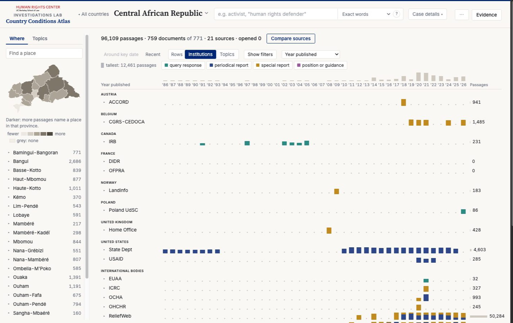
Under the grid, the atlas lists the sources that wrote nothing about this country. Silence can matter too.
7Open a case
Click Evidence. Name a new case. Add a first point in your own words. Then click Case details. Set the key date to Oct 2026 and the deciding country to United States.
The key date is the day that matters. Here it is the day of the transfer. It appears as a line on every timeline. The deciding country puts that country's own institutions at the top of every list.

8See the subjects
Click Topics above the grid.
Now the rows are subjects. There are rows for security, health, women, prisons and more. The key date is the orange line on the right.

9Ask what each source says
Choose the topic “Sexual orientation and gender identity”. Click Compare sources.
For each source the atlas shows two passages. One is nearest my key date. The other is its latest. The clearest passages come first. Reports about ten or more countries stay hidden unless I tick the box. That keeps worldwide reports from drowning a small country.

10Search exact words
Type lesbian*, homosexual*, "same sex", LGBT* and press Enter.
A star catches the endings of a word. LGBT* finds LGBTI and LGBTQI+. Quotes keep a phrase together. A comma means either one. Under the bar, the atlas counts what each word found. I can see which words do the work.
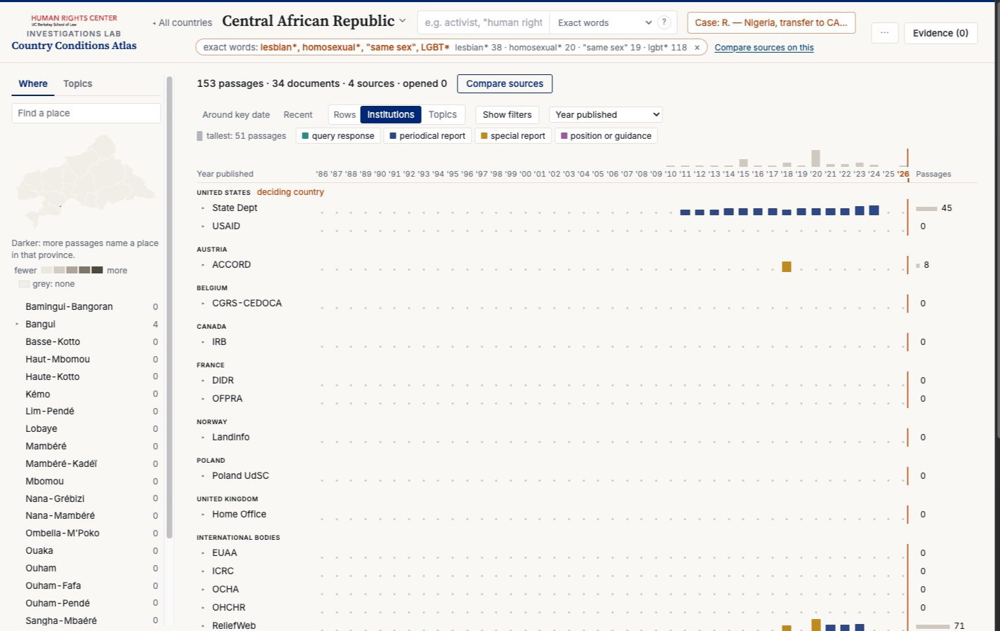
11Put two sources side by side
In Compare sources, tick “Side by side” for two institutions.
The two sources line up year by year. Where one is silent, the atlas says so. This is how I find where sources agree and where they do not.
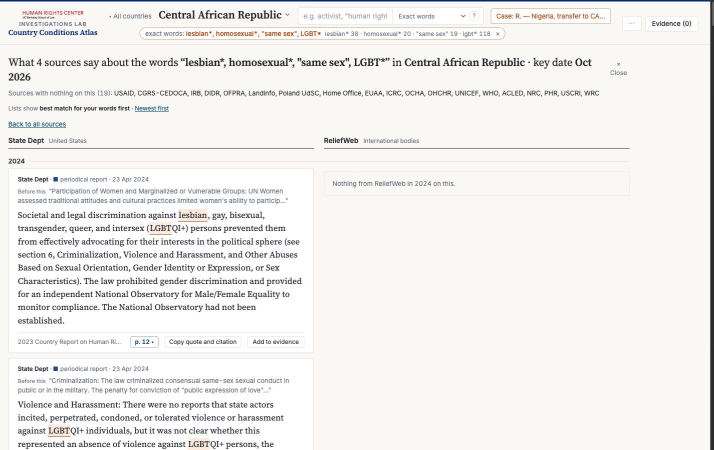
Here the sources disagree. A 2018 report on ReliefWeb says sex between people of the same sex is not a crime in the Central African Republic. The State Department says every year that the penal code punishes “public expression of love” between people of the same sex.
The State Department's 2024 report explains the gap. The law punishes such conduct in public. It does not strictly punish it in private. I will say so in my brief.
All Survivors Project, published on ReliefWeb, 23 February 2018, page 33. US Department of State, 2023 Country Report on Human Rights Practices: Central African Republic, 23 April 2024, page 17.
12Read the page itself
Click the page number on a passage.
The report opens at that page, just as it was printed. A box is drawn around the passage. The Match buttons step through every passage that holds my words. On the left are earlier editions of the same report, one click each. On the right are two buttons I will use often. One adds the passage to my evidence. The other copies it with its citation.

The newest State Department report says this about the country today:
“…maintaining a same-sex relationship was extraordinarily dangerous.”
The same report finds no law that protects gay and lesbian people from discrimination. The constitution bans same-sex marriage. There were no known groups left to defend them.
US Department of State, 2023 Country Report on Human Rights Practices: Central African Republic, 23 April 2024, pages 17 and 18.
Then I walk back through the earlier editions. The ban on “public expression of love” between people of the same sex is in every report from 2011 on. The punishment is six months to two years in prison. Since 2012 the reports have called the hostility of society “entrenched”.
US Department of State, Country Reports on Human Rights Practices: Central African Republic, editions from 2011 to 2024.
13Read reports in other languages
Many reports are not in English. A machine translated them, and the atlas searches both texts. When a passage is long, its card shows the part that matches, with dots on either side. “Show all” shows the rest. A translation always says it is one. The original is one click away.
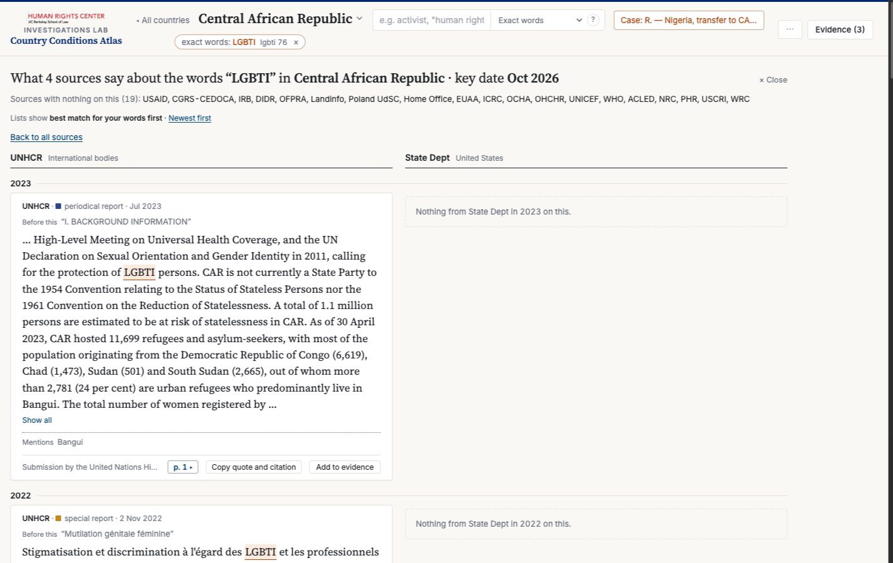
14Search by meaning inside the country
Switch to Similar wording. Type women and girls raped by members of armed groups.
R. would arrive alone, in a country at war. I want to know what happens there to women. Similar wording finds the passages however each report put it.
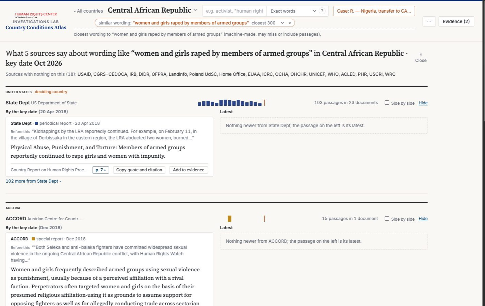
15Find the newest reports
The collection runs into the autumn of 2026. Many of the newest reports on the Central African Republic are in French. They come from UN agencies and European asylum offices. When I open one, the French page shows with the passage outlined. The English sits beside it.
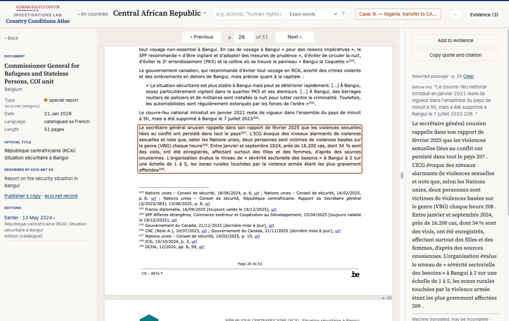
The report cites the United Nations. Two people suffer violence because of their gender every hour. Between January and September 2024, nearly 16,200 cases were recorded. A third of them were rapes. Most of the victims were girls and women.
CGRS-CEDOCA, République centrafricaine (RCA): Situation sécuritaire à Bangui, 21 January 2026, page 26. Read through the machine translation. Check the French before you quote it.
Study the country she may be sent on to
The danger may not end in the Central African Republic. If that country sends R. back to Nigeria, I need to know what waits for her there.
16Switch country and keep the case
Click the country's name in the bar and choose Nigeria. Search "same sex marriage".
The case comes along. So do the key date and the deciding country.

17Read the latest guidance
Search lesbian*, women. Open the UK Home Office note of June 2025 at page 4.

Nigeria's federal law punishes sex between men. In the twelve northern states, sharia law applies to Muslims, and it punishes sex between women as well.
“Penalties for ‘lesbianism’ range from death to flogging and imprisonment.”
UK Home Office, Country Policy and Information Note, Nigeria: Sexual orientation, gender identity and expression, and sex characteristics, version 4.0, June 2025, page 4.
18Narrow the documents
Click Show filters.
I can keep only some languages, some kinds of institution, or institutions from some countries. I can keep only the newest edition of each report. I can hide reports about ten or more countries. Each choice shows how many documents it holds before I tick it.

Take the evidence out
Everything I saved waits in the Evidence drawer. It sits under the points I wrote.
19Open the evidence
Click Evidence.
Every passage is kept word for word. Its citation is written the way my court wants it. I can add a note, move a passage to another point, or open its page again. Nothing leaves this browser.
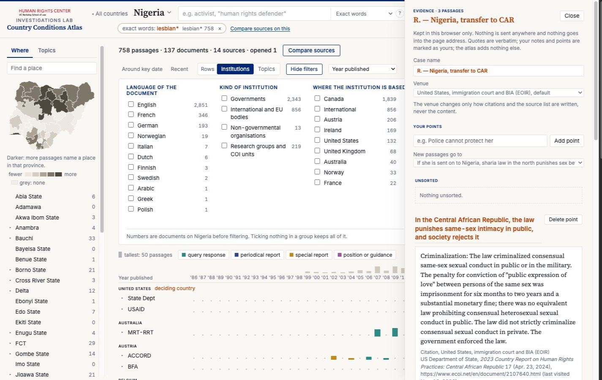
20Make the Word file
At the bottom of the drawer I can make a Word file to write from. I can copy a list of sources into a document I already have. I can save a backup and give it to a colleague. I can print.
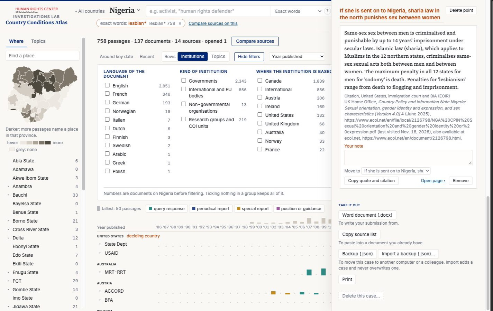
What I found
| I asked | The reports say | Who said it, and when |
|---|---|---|
| Is it a crime to love a woman in the Central African Republic? | The law punishes it in public with six months to two years in prison. It does not strictly punish it in private. One 2018 report says it is no crime at all. | US State Department, 2011 to 2024. All Survivors Project on ReliefWeb, 2018. |
| How would people there treat her? | The hostility is “entrenched”. A same-sex relationship is “extraordinarily dangerous”. No law protects her and no group defends her. | US State Department, April 2024 and earlier. |
| Why are there so few reports of abuse? | The reports say people may be hiding who they are. War also hides the causes of violence. | US State Department, 2023 and 2024. ACCORD, December 2018. |
| What waits there for a woman alone? | Armed groups rape women and girls and go unpunished. Nearly 16,200 cases of gender violence were recorded in nine months of 2024. | US State Department, 2018. Belgian asylum office, January 2026. |
| What if she is sent back to Nigeria? | Sharia law in the twelve northern states punishes sex between women, up to death. Federal law bans same-sex marriage and gay groups. | UK Home Office, June 2025. |
What to remember
Quote from the printed page, not from a card. Open the page every time.
A machine made the translations. A machine made the topics and the similar wording, too. All of them can be wrong. Exact words are exact.
When a source says nothing, it may not have looked. Silence is not safety.
A report about a whole region is filed under every country it names. Make sure your passage is about your country.
The atlas holds a selection of ecoi.net, not all of it. When the stakes are high, look further.